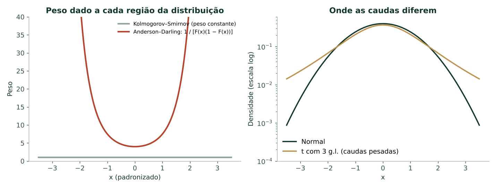
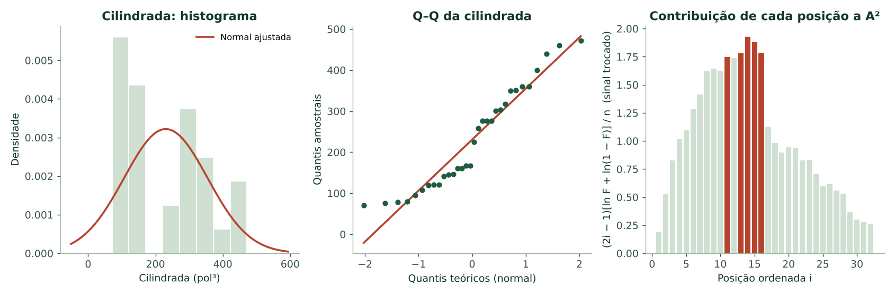

Anderson–Darling (normalidade)
Avalia a adequação à distribuição normal dando maior peso às caudas, útil quando eventos extremos importam.
Comece por aqui
O teste de Anderson–Darling (AD) responde à mesma pergunta do Shapiro–Wilk e do KS, mas com um olhar especial: ele dá mais peso às caudas da distribuição. Isso importa quando o interesse está em eventos raros, como falhas extremas, cargas máximas ou valores de risco.
O que é o teste
O AD (ANDERSON; DARLING, 1952; 1954) mede a distância entre a ECDF e a CDF teórica, como o KS, porém integrando as diferenças ao quadrado e ponderando cada região por \(1/[F_0(x)(1-F_0(x))]\). Esse peso cresce quando \(F_0\) se aproxima de 0 ou de 1, isto é, nas caudas.

Pressupostos e como verificá-los
| Pressuposto | Como verificar |
|---|---|
| Variável contínua, sem muitos empates | anyDuplicated(x), table(x) |
| Observações independentes | Delineamento; acf(x) para séries |
n ≥ 8 na implementação do nortest | length(x) (o exemplo numérico com n = 5 é apenas didático: o R recusa n < 8) |
| Parâmetros estimados (caso usual) | O ad.test() já incorpora a correção para média e variância estimadas |
| Normalidade relevante: a dos resíduos em regressão e ANOVA | ad.test(residuals(modelo)) |
Hipóteses e estatística de teste
Em que:
- \(A^2\)
- estatística de Anderson–Darling
- \(A^{*}\)
- estatística corrigida para parâmetros estimados (STEPHENS, 1974)
- \(n\)
- tamanho da amostra
- \(x_{(i)}\)
- i-ésima observação ordenada
- \(F_0\)
- CDF normal com média e desvio-padrão amostrais: \(F_0(x)=\Phi((x-\bar x)/s)\)
Exemplo numérico, passo a passo (n = 5)
Dados: 12, 17, 19, 22 e 28, com \(\bar x=19{,}6\) e \(s=5,9414\). Cada termo é \((2i-1)[\ln p_i+\ln(1-p_{n+1-i})]\), em que \(p_i=\Phi(z_i)\).
| i | x(i) | z | p = Φ(z) | ln p(i) | ln(1 − p(n+1−i)) | (2i−1)·soma |
|---|---|---|---|---|---|---|
| 1 | 12 | -1,2792 | 0,1004 | -2,2984 | -2,5420 | -4,8404 |
| 2 | 17 | -0,4376 | 0,3308 | -1,1061 | -1,0697 | -6,5274 |
| 3 | 19 | -0,1010 | 0,4598 | -0,7770 | -0,6158 | -6,9639 |
| 4 | 22 | 0,4039 | 0,6569 | -0,4203 | -0,4017 | -5,7539 |
| 5 | 28 | 1,4138 | 0,9213 | -0,0820 | -0,1058 | -1,6903 |
Soma = -25,7759; \(A^2=-5--25,7759/5=0,1552\) e \(A^*=0,1924\). Valor-p aproximado = 0,895: sem evidência contra a normalidade (n = 5).
Propriedades e valor-p
- \(A^2\geq 0\); valores grandes indicam afastamento da distribuição proposta.
- A distribuição nula de \(A^2\) depende do tipo de \(F_0\) e de quais parâmetros são estimados; por isso existem tabelas e aproximações específicas para a normal.
- O
nortestcalcula o valor-p por fórmulas empíricas em \(A^*\) (D’AGOSTINO; STEPHENS, 1986): por exemplo, para \(0{,}6\leq A^*<10\), \(p=\exp(1{,}2937-5{,}709A^*+0{,}0186A^{*2})\). - Não há intervalo de confiança usual para \(A^2\).
Como interpretar os resultados
| Resultado | Leitura | Cuidado |
|---|---|---|
| p < 0,05 | Há evidência contra a normalidade, com atenção às caudas. | Examine o Q–Q para saber se o desvio está nas caudas ou no centro. |
| p ≥ 0,05 | Sem evidência suficiente contra a normalidade. | Não prova normalidade. |
| n muito grande | Rejeita desvios irrelevantes. | Avalie a magnitude de A e do gráfico. |
Reporte n, A (ou A²) e valor-p, acompanhados do gráfico Q–Q.
Como executar no R e em Python
Onde executar o código em Python
Não é preciso instalar nada: o Google Colab é um computador na nuvem, gratuito, que executa Python pelo navegador e já traz as bibliotecas usadas aqui (numpy, scipy e matplotlib).
ad.test() pertence ao pacote nortest. Instale uma única vez com install.packages("nortest") e carregue em cada sessão com library(nortest).
# install.packages("nortest")
library(nortest)
x <- mtcars$disp
ad.test(x)
Exemplo de aplicação
Contexto dos dados
Voltamos à cilindrada (disp) dos 32 automóveis do mtcars. O interesse está em saber se o desvio da normalidade, já detectado pelo Shapiro–Wilk, também é identificado pelo AD, e se a transformação logarítmica o atenua.
Código em R
# Anderson–Darling para normalidade: exemplo completo ----
# Pacote: nortest. Instale uma única vez: install.packages("nortest")
library(nortest)
# 1. Dados
x <- mtcars$disp # cilindrada (pol³)
n <- length(x)
# 2. Diagnóstico gráfico
par(mfrow = c(1, 2))
hist(x, breaks = "FD", freq = FALSE, col = "gray85", border = "white",
main = "Histograma", xlab = "Cilindrada (pol³)")
curve(dnorm(x, mean(x), sd(x)), add = TRUE, col = "red", lwd = 2)
qqnorm(x, pch = 19); qqline(x, col = "red", lwd = 2)
par(mfrow = c(1, 1))
# 3. Teste de Anderson–Darling
resultado <- ad.test(x)
print(resultado)
# 4. Cálculo manual de A^2 e da correção A* (para conferência)
xs <- sort(x); p <- pnorm((xs - mean(xs)) / sd(xs)); i <- 1:n
A2 <- -n - mean((2 * i - 1) * (log(p) + log(1 - rev(p))))
Astar <- A2 * (1 + 0.75 / n + 2.25 / n^2)
c(A2 = A2, A_corrigida = Astar)
# 5. Comparação com outros testes e com os dados transformados
shapiro.test(x)
ad.test(log(x))
ad.test(mtcars$mpg)
A mesma análise em Python, com os resultados
Cole o código em um notebook do Google Colab ↗ e execute com Shift+Enter. Os valores abaixo são a saída desse código.
# Bibliotecas: numpy, scipy e matplotlib (já instaladas no Google Colab)
import numpy as np
from scipy import stats
import matplotlib.pyplot as plt
mpg = np.array([21, 21, 22.8, 21.4, 18.7, 18.1, 14.3, 24.4, 22.8, 19.2, 17.8, 16.4, 17.3, 15.2, 10.4, 10.4, 14.7, 32.4, 30.4, 33.9, 21.5, 15.5, 15.2, 13.3, 19.2, 27.3, 26, 30.4, 15.8, 19.7, 15, 21.4])
cyl = np.array([6, 6, 4, 6, 8, 6, 8, 4, 4, 6, 6, 8, 8, 8, 8, 8, 8, 4, 4, 4, 4, 8, 8, 8, 8, 4, 4, 4, 8, 6, 8, 4])
disp = np.array([160, 160, 108, 258, 360, 225, 360, 146.7, 140.8, 167.6, 167.6, 275.8, 275.8, 275.8, 472, 460, 440, 78.7, 75.7, 71.1, 120.1, 318, 304, 350, 400, 79, 120.3, 95.1, 351, 145, 301, 121])
def ad_normal(x):
"""Anderson–Darling para normalidade: retorna A², A* (corrigida) e valor-p
(aproximação de D'Agostino e Stephens, 1986, como no pacote nortest do R)."""
xs = np.sort(x); n = len(xs); i = np.arange(1, n + 1)
p = stats.norm.cdf((xs - xs.mean()) / xs.std(ddof=1))
A2 = -n - np.mean((2*i - 1) * (np.log(p) + np.log(1 - p[::-1])))
As = A2 * (1 + 0.75/n + 2.25/n**2)
if As < 0.2: pv = 1 - np.exp(-13.436 + 101.14*As - 223.73*As**2)
elif As < 0.34: pv = 1 - np.exp(-8.318 + 42.796*As - 59.938*As**2)
elif As < 0.6: pv = np.exp(0.9177 - 4.279*As - 1.38*As**2)
elif As < 10: pv = np.exp(1.2937 - 5.709*As + 0.0186*As**2)
else: pv = 3.7e-24
return A2, As, pv
# 1. Dados: cilindrada (disp) de 32 automóveis
x = disp
# 2. Diagnóstico gráfico
fig, ax = plt.subplots(1, 2, figsize=(10, 4))
ax[0].hist(x, bins=8, density=True, color="lightgray", edgecolor="white")
t = np.linspace(x.min(), x.max(), 200)
ax[0].plot(t, stats.norm.pdf(t, x.mean(), x.std(ddof=1)), color="red"); ax[0].set_title("Histograma")
stats.probplot(x, dist="norm", plot=ax[1]); ax[1].set_title("Gráfico Q-Q")
plt.show()
# 3. Teste de Anderson–Darling
A2, As, p = ad_normal(x)
print(f"Anderson-Darling (disp): A² = {A2:.5f}, A* = {As:.5f}, p-valor = {p:.4f}")
# 4. Comparação com outros testes e com dados transformados
W, pw = stats.shapiro(x)
print(f"Shapiro-Wilk (disp): W = {W:.5f}, p-valor = {pw:.4f}")
A2l, Asl, pl = ad_normal(np.log(x))
print(f"Anderson-Darling log(disp): A² = {A2l:.5f}, p-valor = {pl:.4f}")
A2m, Asm, pm = ad_normal(mpg)
print(f"Anderson-Darling (mpg): A² = {A2m:.5f}, p-valor = {pm:.4f}")
# 5. Exemplo do texto (n = 5; didático — o R exige n >= 8)
y = np.array([12, 17, 19, 22, 28.])
A5, As5, p5 = ad_normal(y)
print(f"\nn = 5: A² = {A5:.4f}, A* = {As5:.4f}, p ≈ {p5:.3f}")
Resultados da execução
Anderson-Darling (disp): A² = 0.87450, A* = 0.89692, p-valor = 0.0221 Shapiro-Wilk (disp): W = 0.92001, p-valor = 0.0208 Anderson-Darling log(disp): A² = 0.69148, p-valor = 0.0642 Anderson-Darling (mpg): A² = 0.57968, p-valor = 0.1207 n = 5: A² = 0.1552, A* = 0.1924, p ≈ 0.895

| Teste / dados | Estatística | Valor-p | Decisão (5%) |
|---|---|---|---|
| AD, disp | 0,8745 | 0,0221 | Rejeita |
| Shapiro–Wilk, disp | 0,9200 | 0,0208 | Rejeita |
| AD, log(disp) | 0,6915 | 0,0642 | Não rejeita (limítrofe) |
| AD, mpg | 0,5797 | 0,1207 | Não rejeita |
Leitura: AD e Shapiro–Wilk concordam para a cilindrada (p ≈ 0,02). Com o logaritmo, o valor-p fica próximo de 0,06: a evidência enfraquece, mas o resultado é limítrofe e não deve ser tratado como confirmação de normalidade.
Erros comuns
| Erro | Como evitar |
|---|---|
| Comparar A com tabelas do caso em que os parâmetros são conhecidos | Use ad.test(), que já considera parâmetros estimados. |
| Confundir A² com A* | No nortest, a estatística impressa é A²; o valor-p usa A*. |
| Concluir normalidade pelo p alto | Interprete junto com o Q–Q. |
| Usar com dados discretos ou muito empatados | Escolha métodos adequados a dados discretos. |
Alternativas e fluxo de trabalho
| Teste | Quando preferir |
|---|---|
| Shapiro–Wilk | Poder geralmente maior para n pequeno e médio. |
| Anderson–Darling | Interesse nas caudas; amostras grandes. |
| Lilliefors | Quando se deseja a estrutura do KS. |
| Cramér–von Mises | Distância integrada sem ponderação especial das caudas. |
| Teste de Jarque–Bera | Assimetria e curtose em amostras grandes. |
- Desenhe histograma e Q–Q.
- Aplique o AD (e, se quiser, o Shapiro–Wilk).
- Se rejeitar, identifique a região do desvio.
- Considere transformação, método robusto ou modelo com outra distribuição.
Referências desta ficha
- ANDERSON, Theodore W.; DARLING, Donald A. Asymptotic theory of certain “goodness of fit” criteria based on stochastic processes. The Annals of Mathematical Statistics, v. 23, n. 2, p. 193-212, 1952.
- ANDERSON, Theodore W.; DARLING, Donald A. A test of goodness of fit. Journal of the American Statistical Association, v. 49, n. 268, p. 765-769, 1954.
- STEPHENS, Michael A. EDF statistics for goodness of fit and some comparisons. Journal of the American Statistical Association, v. 69, n. 347, p. 730-737, 1974.
- D’AGOSTINO, Ralph B.; STEPHENS, Michael A. (ed.). Goodness-of-fit techniques. New York: Marcel Dekker, 1986.
- RAZALI, Nornadiah Mohd; WAH, Yap Bee. Power comparisons of Shapiro-Wilk, Kolmogorov-Smirnov, Lilliefors and Anderson-Darling tests. Journal of Statistical Modeling and Analytics, v. 2, n. 1, p. 21-33, 2011.
- GROSS, Juergen; LIGGES, Uwe. nortest: tests for normality. R package, versão 1.0-4, 2015. Disponível em: https://CRAN.R-project.org/package=nortest.
- HENDERSON, Harold V.; VELLEMAN, Paul F. Building multiple regression models interactively. Biometrics, v. 37, n. 2, p. 391-411, 1981. (Conjunto de dados
mtcars, pacotedatasetsdo R.) - R CORE TEAM. R: a language and environment for statistical computing. Vienna: R Foundation for Statistical Computing, 2026. Disponível em: https://www.r-project.org/.
- POSIT TEAM. RStudio: integrated development environment for R. Boston: Posit Software, PBC. Disponível em: https://posit.co/download/rstudio-desktop/.
- VIRTANEN, Pauli et al. SciPy 1.0: fundamental algorithms for scientific computing in Python. Nature Methods, v. 17, p. 261-272, 2020. DOI: 10.1038/s41592-019-0686-2. (Funções do módulo
scipy.stats.) - HARRIS, Charles R. et al. Array programming with NumPy. Nature, v. 585, p. 357-362, 2020. DOI: 10.1038/s41586-020-2649-2.
- HUNTER, John D. Matplotlib: a 2D graphics environment. Computing in Science & Engineering, v. 9, n. 3, p. 90-95, 2007.
- GOOGLE. Google Colaboratory. Disponível em: https://colab.research.google.com/.
- As figuras desta ficha foram elaboradas pelo autor.

Prof. Dr. Cássius Henrique Xavier Oliveira
Professor · ICTIN/UFLA · Estatística, Confiabilidade e Ciência de Dados.
Conheça minha trajetória e projetos →